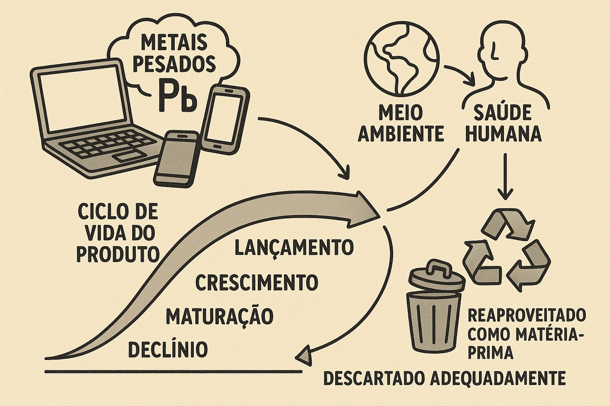

Normas sobre o descarte do lixo eletrônico!
A legislação brasileira sobre lixo eletrônico ainda segue as regras gerais para resíduos sólidos, sem leis específicas para esse tipo de resíduo. De acordo com Ferreira (2012), a Política Nacional de Resíduos Sólidos (PNRS) trata o lixo eletrônico dentro das normas gerais de resíduos sólidos, mas a aplicação de punições para o não cumprimento das obrigações é detalhada pela Lei 13.576, que trata de crimes ambientais.
No entanto, apenas o estado de São Paulo possui uma legislação própria (Lei 13.576/09), que obriga os fabricantes a se responsabilizarem pela reciclagem dos produtos eletrônicos.
De acordo com o artigo 33 da Lei 12.305/2010, as empresas têm a obrigação de implementar formas de logística reversa que funcionem após o uso pelo consumidor, sem depender dos serviços públicos de limpeza urbana.
A Política Nacional do Meio Ambiente (PNMA), estabelecida pela Lei 6.938/81, protege os recursos naturais, mas ainda carece de normas detalhadas sobre o manejo do lixo eletrônico, o que representa uma lacuna importante na legislação
Voltar ao início